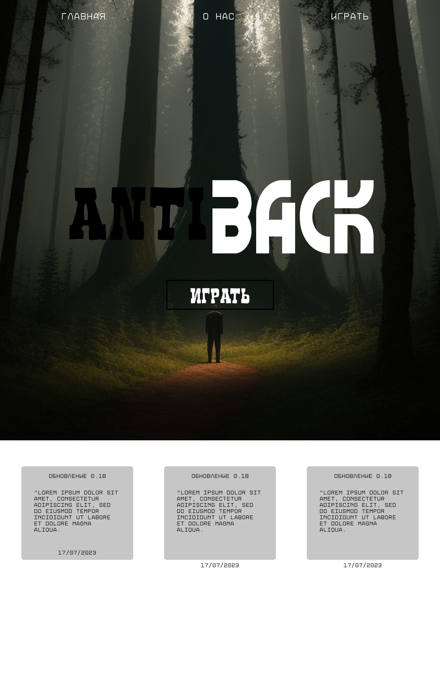
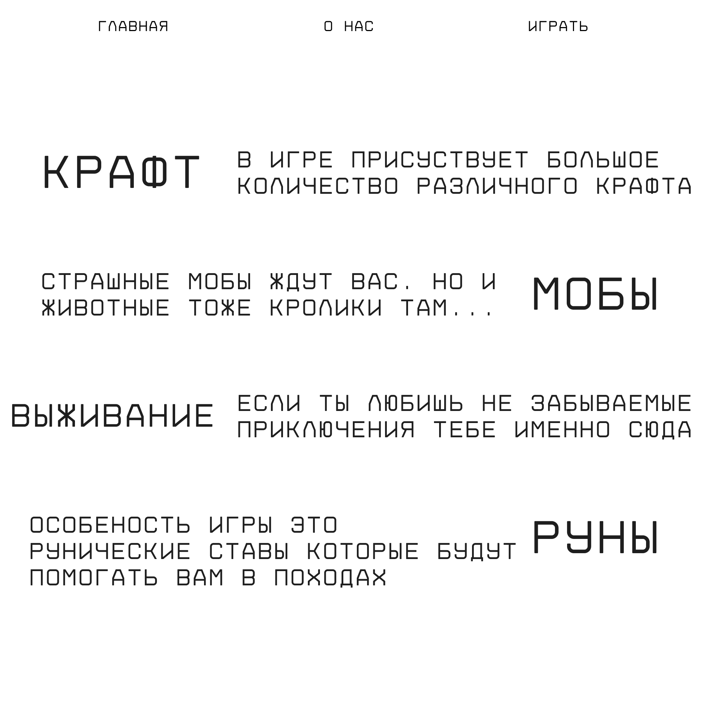
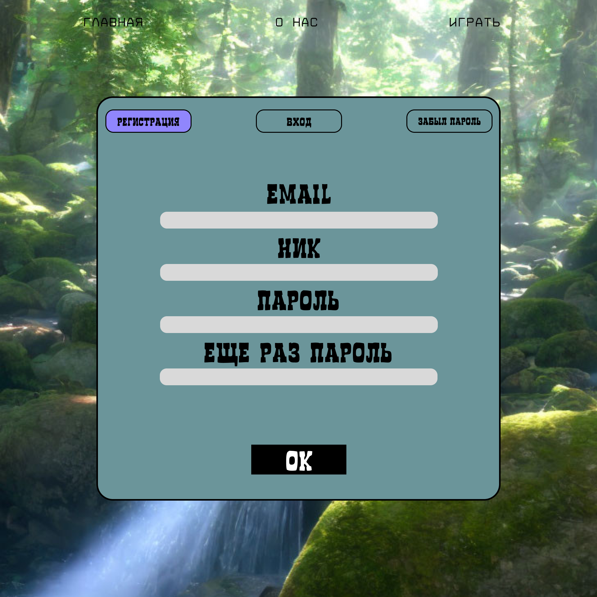

ANTI BACK

Концепция
Промо-лендинг (Landing Page) для инди-игры в жанре мистического выживания и Survival/RPG. Задача интерфейса — с первого экрана погрузить пользователя в гнетущую, загадочную атмосферу игрового лора и подтолкнуть к регистрации.
Стилистика
Игровой минимализм, Dark Atmospheric UI, мистический сурвайвал.
01 / Разбор игрового интерфейса

Демонстрация лора и механик
Асимметричная журнальная верстка блока особенностей.

Форма регистрации (Sign Up)
Экран авторизации
02 / UI-Kit & Состояния кнопок
Проработка интерактивных состояний главного призыва к действию (кнопка «ИГРАТЬ»):